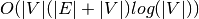
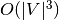

Graph (class)¶
Documentation for the graph class.
A python file that implements a class and functions for graphs.
-
grakel.graph.dijkstra(edge_dictionary, start_vertex, end_vertex=None)[source]¶ Calculate the dijkstra algorithm `see`_.
Parameters: edge_dictionary: dict
A 2-level nested dictionary of symbols, with value corresponding to the weight.
start_vertex: hashable
The start vertex symbol (should exists as a key inside edge_dictionary).
end_vertex: hashable
The end vertex symbol (should exists as a key inside edge_dictionary).
Returns: dict_fd : dict
The dictionary of final distances.
dict_pred : dict
The dictionary of predecessors.
-
grakel.graph.floyd_warshall(adjacency_matrix)[source]¶ Calculate the Floyd Warshall, shortest path matrix.
Parameters: adjacency_matrix : np.array, square
The adjacency matrix of the graph, on which the distances are being calculated.
Returns: dist : np.array
The shortest path matrix as produced by floyd warshall
-
class
grakel.graph.graph(initialization_object=None, node_labels=None, edge_labels=None, graph_format='auto')[source]¶ Bases:
objectThe general graph class.
A general graph class that supports adjacency, dictionary formats while beeing memory/computationaly sustainable.
Parameters: initialization_object : dict, list or array-like, square, default=None
The initialisation object for the graph [valid-graph-format]. If given a dictionary the input can be as follows:
- 2-level nested dictionaries from edge symbols to weights
- Dictionary of symbols to list of symbols (unweighted)
- Dictionary of tuples to weights (weighted)
- Iterable of tuples of len 2 (unweighted)
- Iterable of tuples of len 3 (vertex, vertex, weight)
- If given a array the input can be as follows:
- array-like lists of lists
- np.array
- sparse matrix (scipy.sparse.csr.csr_matrix)
node_labels : dict, default=None
- A label dictionary corresponding to all vertices of the graph:
- for adjacency matrix labels should be given to numbers starting from 0 and ending in N-1, where the matrix has size N by N
- for dictionary labels should correspond to all keys
edge_labels : dict, default=None
A labels dictionary corresponding to all edges of the graph keys: tuples, value: label
graph_format : str, valid_values={“dictionary”, “adjacency”, “all”,
“auto”}, default=None
Defines the internal representation of the graph object which can be a dictionary as a matrix, or both:
- for dictionary: “dictionary”
- for adjacency_matrix: “adjacency”
- for both: “all”
- for the current_format (if existent): “auto”
Attributes
n (int) The one dimension of the (square) adjacency matrix. Signifies the number of vertices. adjacency_matrix: np.array The adjacency_matrix corresponding to the graph. index_node_labels (dict) Label dictionary for indeces, of adjacency matrix. Keys are valid numbers from 0 to n-1. index_edge_labels (dict) Label dictionary for edges, of adjacency matrix. Keys are tuple pairs of symbols with valid numbers from 0 to n-1, that have a positive adjacency matrix value. vertices: set The set of vertices corresponding to the edge_dictionary representation. edge_dictionary: dict A 2-level nested dictionary from edge symbols to weights. node_labels (dict) Label dictionary for nodes. Keys are vertex symbols inside vertices. edge_labels (dict) Label dictionary for edges. Keys are tuple pairs of symbols inside vertices and edges. edsamic (dict) Edge-Dictionary-Symbols-Adjacency-Matrix-Index-Correspondance. A dictionary which translates dictionary symbols to adjacency matrix indexes, when storing both formats. shortest_path_mat (np.array, square) Holds the shortest path matrix. label_group (dict) A 2-level nested dict that after the first level of a pair tuple for purpose: “adjacency”, “dictionary” and “vertex”,”edge” specification holds the inverse map of labels. laplacian_graph (np.array) Holds the graph laplacian. lovasz_theta (float) Holds the lovasz theta of the current graph. svm_theta (float) Holds the svm theta of the current graph. metric_subgraphs_dict (dict) Stores a calculation for subgraphs for each tuple consistent of: (“lovasz”/”svm”, the number of samples, minimum sample size, maximum sample size) to avoid recalculation. _format: str, valid_values={“adjacency”, “dictionary”, “all”} Private attribute that keeps the current format. Methods
build_graph(g[, node_labels, edge_labels])Build a graph structure, given a supported graph representation. build_shortest_path_matrix([algorithm_type, …])Build and return the shortest path matrix between all nodes. calculate_lovasz_theta([from_scratch])Calculate the lovasz theta for the given graph. calculate_subgraph_samples_metric_dictionary(…)Calculate a graph metric. calculate_svm_theta([from_scratch])Calculate the svm theta for the given graph. change_format(graph_format)Change the format of the graph from an existing to an other. construct_labels([label_type, purpose])Construct labels (if user does not provide). convert_labels([target_format, purpose, init])Convert labels to a desired format. desired_format(graph_format[, warn])Change the format to include the desired. get_adjacency_matrix()Get the adjacency matrix. get_edge_dictionary()Get the edge dictionary. get_edges([purpose, with_weights])Create an iterable of edges as tuples. get_label_group([label_type, purpose])Calculate the inverse dictionary for vertex labels (once). get_labels([label_type, purpose])Get labels corresponding to the purpose. get_subgraph(vertices)Calculate the subgraph of object in the same format as the original. get_vertices([purpose])Create an iterable of vertices. label(obj[, label_type, purpose])Get the label of a vertex. laplacian([save])Calculate the laplacian of the given graph. neighbors(vertex[, purpose, with_weights])Find all neighbors of a vertex. nv()Get the number of vertices for any existing format. produce_neighborhoods([r, purpose, …])Calculate neighborhoods for each node of a Graph, up to a depth. relabel(new_labels[, purpose, label_type])Relabel the graph object, supporting the current format. -
adjacency_matrix= array([], dtype=float64)¶
-
build_graph(g, node_labels=None, edge_labels=None)[source]¶ Build a graph structure, given a supported graph representation.
Parameters: g : a valid graph format
Similar to intialization object (of
__init__).node_labels: dict, default=None
Node labels dictionary relevant to g format.
edge_labels: dict, default=None
Edge labels dictionary relevant to g format.
Returns: None.
-
build_shortest_path_matrix(algorithm_type='auto', clean=False, labels='vertex')[source]¶ Build and return the shortest path matrix between all nodes.
Parameters: algorithm_type : str, valid_values={“auto”, “adjacency”, “dictionary”},
default=”auto”
Defines which shortest-path algorithm will be used for building the shortest path matrix.
- “dijkstra” : choses the dijkstra algorithm (Matrix computation
complexity:  + “floyd_warshall” : choses the floyd-warshall algorithm (Matrix computation complexity:  + “auto” : choses the best possible algorithm for the current format
clean : bool, default=False
Construct the shortest path matrix from scratch or output existing if exists
labels : str, valid_values={“vertex”, “edge”, “all”, “none”},
default=”vertex”
Returns labels corresponding for the indexes of the shortest path matrix for vertices, for edge (only for the valid ones on the original graph), for both (“all”) and for no labels (“none”)
Returns: shortest_path_matrix : np.array, shape=(
 ,:math:|V|)
,:math:|V|)The produced shortest path matrix.
vertex_labels : dict
The vertex labels, outputed only if labels parameter is either “vertex” or “all”.
edge_labels : dict
The edge labels, outputed only if labels parameter is either “edge” or “all”.
-
calculate_lovasz_theta(from_scratch=False)[source]¶ Calculate the lovasz theta for the given graph.
Parameters: from_scratch: bool, default=False
Defines if the the lovasz_theta will be calculated from scratch.
Returns: lovasz_theta: float
Returns the lovasz theta number.
-
calculate_subgraph_samples_metric_dictionary(metric_type, n_samples=50, subsets_size_range=(2, 8), from_scratch=False, save=True)[source]¶ Calculate a graph metric.
Calculates a graph metric as the lovasz theta kernel or the svm-theta kernel, on a set of randomly sampled subgraphs, producing a dictionary of subgraph levels and sets.
Parameters: n_samples : int, default=50
The number of samples that will be sampled.
subsets_size_range : tuple, len=2, default=(2,8)
A tuple having the min and the max subset size.
from_scratch : bool
Defines if the the metric will be calculated from scratch.
save : bool
Determine if the metric output will be stored.
Returns: level_values : dict
Returns a dictionary with levels (subsite size) and the lovasz value of all the sampled subgraphs.
-
calculate_svm_theta(from_scratch=False)[source]¶ Calculate the svm theta for the given graph.
Parameters: from_scratch: bool, default=False
Defines if the the svm_theta number will be calculated from scratch.
Returns: svm_theta: float
Returns the svm theta number.
-
change_format(graph_format)[source]¶ Change the format of the graph from an existing to an other.
Returns: None.
-
construct_labels(label_type='vertex', purpose='adjacency')[source]¶ Construct labels (if user does not provide).
Parameters: label_type: str, valid_values={“vertex”, “edge”}, default=”vertex”
What kind of labels are going to be constructed
purpose: str, valid_values={“adjacency”, “dictionary”},
default=”adjacency”
Defines if the labels correspond to dictionary or adjacency matrix
Returns: None.
-
convert_labels(target_format='dictionary', purpose='all', init=False)[source]¶ Convert labels to a desired format.
Parameters: target_format: str, valid_values={“adjacency”, “dictionary”},
default=”dictionary”
Defines what the target format for conversion will be.
purpose: str, valid_values={“adjacency”, “dictionary”, “all”},
default=”all”
Defines if the labels will be converted for dictionary, adjacency matrix or both.
init: bool, default=False
An override parameter for format checks, usefull for initialisation.
Returns: None.
-
desired_format(graph_format, warn=False)[source]¶ Change the format to include the desired.
Parameters: graph_format : str, valid_values={“dictionary”, “adjacency”, “all”}
Defines the internal representation of the graph object which can be a dictionary as a matrix, or both:
- for dictionary: “dictionary”
- for adjacency_matrix: “adjacency”
- for both: “all”
warn : bool, default=False
Warn the user if the format of the graph is being changed.
Returns: None.
-
edge_dictionary= {}¶
-
edge_labels= {}¶
-
edsamic= {}¶
-
get_adjacency_matrix()[source]¶ Get the adjacency matrix.
Format agnostic method.
Parameters: None.
Returns: adjacency_matrix : np.array
Returns the adjacency matrix of the current graph.
-
get_edge_dictionary()[source]¶ Get the edge dictionary.
Format agnostic method.
Parameters: None.
Returns: edge_dictionary : dict
Returns the edge_dictionary of the current graph.
-
get_edges(purpose='adjacency', with_weights=False)[source]¶ Create an iterable of edges as tuples.
Parameters: purpose : str, valid_values={“adjacency”, “dictionary”},
default=”adjacency”
Defines if the edges is given for the “dictionary” format of the graph (symbol) to the “adjacency” (index).
Returns: vertices : list
Returns a list of tuples for edges.
-
get_label_group(label_type='vertex', purpose='dictionary')[source]¶ Calculate the inverse dictionary for vertex labels (once).
Parameters: label_type : str, valid_values={“vertex”, “edge”}, default=”vertex”
Defines if the the labels-group will correspond to vertices or edges.
purpose : str, valid_values={“dictionary”, “adjacency”, “any”},
default=”dictionary”
Defines if the labels-group will correspond to “dictionary” (symbols), to “adjacency” (indexes) or to “any” valid format (if “all” the result is for “adjacency”).
Returns: label_group : dict
Returns the inverse label group.
-
get_labels(label_type='vertex', purpose='adjacency')[source]¶ Get labels corresponding to the purpose.
Parameters: label_type : str, valid_values={“vertex”, “edge”}, default=”vertex”
Defines if the the labels will correspond to vertices or edges.
purpose : str, valid_values={“dictionary”, “adjacency”, “any”},
default=”dictionary”
Defines if the labels will correspond to “dictionary” (symbols), to “adjacency” indexes, or to “any” valid format (if “all” the result is for “adjacency”).
Returns: labels : dict,
Returns the labels for the given type and purpose.
-
get_subgraph(vertices)[source]¶ Calculate the subgraph of object in the same format as the original.
Parameters: vertices: iterable
An iterbale vertices extracted from the original graph.
Returns: subgraph : graph
The induced subgraph, from the input vertices.
-
get_vertices(purpose='adjacency')[source]¶ Create an iterable of vertices.
Parameters: purpose : str, valid_values={“adjacency”, “dictionary”, “any”},
default=”adjacency”
Defines if the vertices will correspond given for the “dictionary” format of the graph (symbol) to the “adjacency” (index) or to “any” existing format (if “all” the expected type is for “adjacency”).
Returns: vertices : iterable
Returns an iterable on vertices
-
index_edge_labels= {}¶
-
index_node_labels= {}¶
-
label(obj, label_type='vertex', purpose='dictionary')[source]¶ Get the label of a vertex.
Parameters: obj : hashable
The candidate labeled object for the corresponding purpose and label type.
label_type : str, valid_values={“vertex”, “edge”}, default=”vertex”
Defines if the lookup of the label will be done for vertices or edges.
purpose : str, valid_values={“dictionary”, “adjacency”, “any”},
default=”dictionary”
Defines if the lookup will be done on the existing (“any” - if “all” default is adjacency) to the “dictionary” or to the “adjacency” format of the graph.
Returns: label : str, list, …, valid-label-type
Returns the label of the current object on the defined lookup.
-
label_group= {}¶
-
laplacian(save=True)[source]¶ Calculate the laplacian of the given graph.
Parameters: save: bool, default=True
Optional parameter to store the matrix.
Returns: laplacian: array-like
Returns the graph laplacian
-
laplacian_graph= None¶
-
lovasz_theta= None¶
-
metric_subgraphs_dict= {}¶
-
n= -1¶
-
neighbors(vertex, purpose='any', with_weights=False)[source]¶ Find all neighbors of a vertex.
Parameters: vertex : hashable
The vertex, which neighbors we are searching for.
purpose : str, valid_values={“adjacency”, “dictionary”, “any”},
default=”any”
Defines if the vertex is given for the “dictionary” format of the graph (symbol) to the “adjacency” (index) or to “any” existing format (if “all” the expected type is for “adjacency”).
with_weights : bool, default=False
Defines if the neighbours will be outputed with weights.
Returns: neighbors : list or dict
- The neighbors of the given vertex.
- with_weights=False: list of neighbor vertices
- with_weights=True: dictionary between neighbor vertices and edge labels
-
node_labels= {}¶
-
nv()[source]¶ Get the number of vertices for any existing format.
Parameters: None.
Returns: num_of_vertices : int
Returns the number of vertices.
-
produce_neighborhoods(r=3, purpose='adjacency', with_distances=False, d=-1)[source]¶ Calculate neighborhoods for each node of a Graph, up to a depth.
Parameters: r : int
The neighborhood depth (radius).
purpose : str, valid_values={“adjacency”, “dictionary”},
default=”adjacency”
Defines if the neighborhood symbols will correspond given for the “dictionary” format of the graph (symbol) to the “adjacency” (index).
with_distances: bool, default=False
Defines if we need to calculate BFS distances for each pair.
d : int, default=-1
Maximum distance considered. If -1 is provided the distance is as max as the radius r.
Returns: N : dict
A level, vertex nested dictionary of lists, corresponding to the neighbors of level
 for a certain vertex
for a certain vertex  .
.D : dict
For each level, set of tuples of nodes connected in that level. Appears only if with_distances is True.
Dist_pair : dict
A dictionary of all pairs and their distances.
-
relabel(new_labels, purpose='dictionary', label_type='vertex')[source]¶ Relabel the graph object, supporting the current format.
Parameters: new_labels : dict
The new labels corresponding to the label type and purpose.
purpose : str, valid_values={“dictionary”, “adjacency”},
default=”dictionary”
Defines if the new labels are given for “adjacency” or “dictionary”.
label_type : str, valid_values={“vertex”, “edge”}, default=”vertex”
Defines if the new labels are for vertices or edges.
Returns: None.
-
shortest_path_mat= None¶
-
svm_theta= None¶
-
vertices= set()¶
-
grakel.graph.is_adjacency(g, transform=False)[source]¶ Define if input is in a valid adjacency matrix format.
Parameters: g : Object
The input object.
transform : bool, default=False
Defines if the input will be transformed to the internal adjacency matrix support format.
Returns: is_adjacency : bool
A variable that determines if the input is a valid adjacency matrix.
g_transformed : np.array
Holds the transformed object to an np.array. This output appears only if transform parameter is True.
-
grakel.graph.is_edge_dictionary(g, transform=False)[source]¶ Define if input is in a valid edge dictionary format.
Parameters: g : Object
The input object.
transform : bool, default=False
Defines if the input will be transformed to the internal edge dictionary support format.
Returns: is_edge_dictionary : bool
A variable that determines if the input is a valid edge dictionary.
g_transformed_vertices : set
Holds the transformed object vertices of the edge_dictionary.
g_transformed_edge_dict : dict
Holds the transformed object as a 2-level edge dict. This output appears only if transform parameter is True.